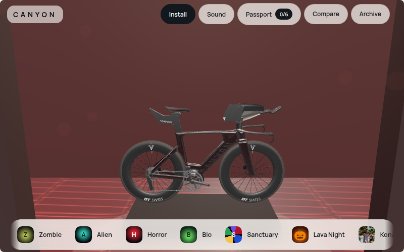
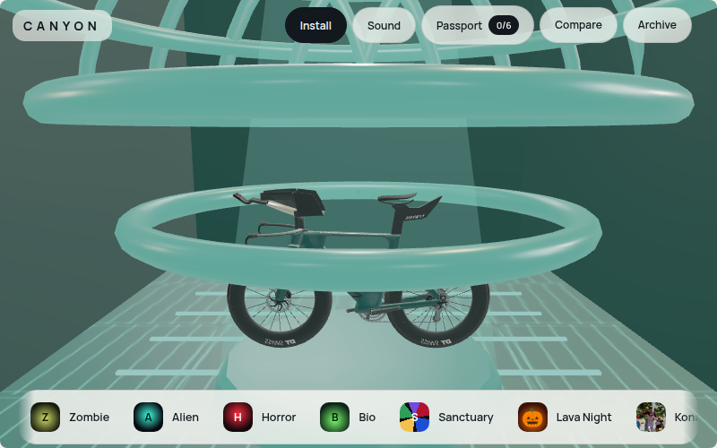
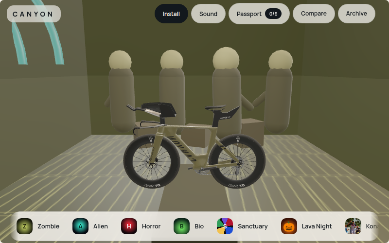
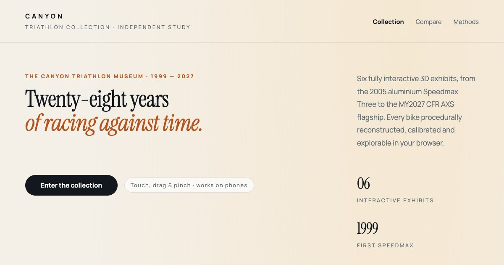

Create yourself
Build an athlete identity, choose a bike and decide what you are training or dreaming toward.
USER STUDIOKONA.M / FIELD GUIDE / 001
You might be trying to figure out what Kona.m is.
Funny enough, so am I. I started trying to build a better triathlon thing. Then there were 3D bikes. Then a game. Then dreams. Then worlds. Then collectibles. Then some AI. Then several ideas that should probably have stayed in a notebook.
So, in a nutshell: gaming + 3D + cool bikes + dreaming + random + worlds + triathlon + whatever survives the next build.
the intern is still working on the elevator pitch.
WHY KONA.M EXISTS / PICK YOUR VERSION
I could pretend there was a master plan. There wasn't. There was training, an Excel sheet, AI, bikes, rooms, an island, and a suspicious number of side quests.
Pick how much explanation you can tolerate.
One of my favourite people inspired me to get back into triathlon. So I made an Excel sheet.
Now there is an island. That escalated → 02 ~ 1 MINUTETraining → Excel → AI → bikes → 3D bikes → room → museum → island.
The next interesting puzzle became the product. Take the scenic route → 03 HONESTLY, WHO KNOWS?Side quest. Side quest. Completely unnecessary detail that is now absolutely essential. Side quest.
Somehow it became fun to learn again. Enter carefully →I am all ears.
Kona.m is still becoming whatever it is. Feedback, weird ideas, broken buttons and “what if…” suggestions are useful fuel.
01 / HOW TO PLAY
Start anywhere. There is no correct path through Kona.m. The system rewards curiosity more than obedience.
Build an athlete identity, choose a bike and decide what you are training or dreaming toward.
USER STUDIOMove between race places, stories and reconstructed worlds. Some are useful. Some are just fun.
WORLD ENGINECollect artifacts, badges, stamps, keys and clues. Hidden things should remain at least a little hidden.
COLLECTIONSConnect the playful layer to real endurance preparation, race planning and performance data.
PERFORMANCERooms, equipment, stories and experiments open over time. Not everything should be available immediately.
PROGRESSION01.25 / 60-SECOND TOUR
These are real Kona.m surfaces running inside the Field Guide. Tap any frame to open the full experience.

GHOST / HORROR
ALIEN ROOM
AFTER DARK
BIKE COLLECTIONyes, these are the actual pages. no, the intern did not get approval to embed his own website inside his own website.
01.5 / THE INTERN'S MANUAL
Kona.m is built, documented, promoted, maintained and occasionally repaired by one suspiciously busy intern who is also meant to be training.
You do not need to understand everything. Pick an identity, choose a machine, then follow whichever thing looks interesting. The app is intentionally more playground than spreadsheet.
If you are already clicking random things, excellent. Tutorial complete.
There are no wrong answers. There are several questionable ones.
“Us” is doing substantial work in that sentence.
Home tells you what matters now. Discover is where stories and places live. Garage is equipment. Plan is where the serious athlete briefly appears. Me remembers what you have done.
Worst case: go Home. This is also my debugging strategy.
You are not expected to consume everything. Follow a bike. Read one weird story. Enter a room. Leave. Come back later. The world should feel slightly larger than the amount of time you have.
Also please report broken buttons. I apparently made those too.
04 / THE FOUNDING 141
The collection is real: 14 founding rooms × 10 collectibles, plus one roomless oddity called The Point Six. The catalog exists from launch. Finding it is another matter.
Some things are simply somewhere. This is the suspiciously reasonable category.
Some things reward looking properly rather than moving quickly.
Quests, challenges, timing and mastery can make the world answer back.
Not everything is obtainable immediately. The intern has learned the dangerous power of withholding.
06 / FEATURES, APPARENTLY
No concept art in this reel. These are existing Kona.m visual assets and live surfaces, rearranged into a slightly overdramatic product trailer.


show enough to make you curious. hide enough to make you click.
05 / THE WORLD
So the project escaped the museum and started becoming places.
ACTIVE WORLD
The emotional and geographic center of the experiment. Race week, equipment, memory, discovery and the question that started the whole thing.
Enter Kona.m ↗06.5 / THINGS TO TOUCH
A product should demonstrate its ideas rather than hide them inside a slide deck.
GARAGE
Models become objects, objects become collections, and collections eventually become stories you can ride through.
HIDDEN ROOMS
Keys, guesses, timed access and strange doors give the world a reason to stay surprising.
PROGRESSION
Stamps, finds, badges and artifacts turn exploration into a personal trail through the system.
PERFORMANCE
Performance OS explores how training, recovery, observations and predictions can become a useful feedback loop.
WHY KONA.M EXISTS
For a while, finishing something felt more important than knowing exactly what it would become.
So I gave myself permission to build in a different way: less useful on purpose, more curious, more childish, more willing to follow a strange idea simply because it made me want to keep going.
I started with the bikes I always dreamt of having. Then I started building places where those bikes might eventually live. A museum became a world. A world started asking for games, training, stories and AI.
I still do not know exactly what Kona.m turns into. That is no longer a problem to solve immediately. For now, I am excited to make things, learn how they work, connect ideas that normally live in different boxes and see what survives.
Maybe one day this becomes AI triathlon. Maybe it becomes something else entirely. The experiment is the useful part.
Read the longer story →05 / FIELD MANUAL
No agency pitch decks. No corporate committees. Just an overworked intern writing WebGL shaders, fixing torque specs, answering onboarding emails, and trying to sneak in a 5 AM zone 2 ride before the world wakes up.
You don't need a 40-page user manual. Here is the entire onboarding loop distilled by someone who had to code every pixel by hand.
Because finishing something you care about feels 100x better than staring at unfinished ideas. Building the bikes I always dreamt of having gave me my energy back. Now they have worlds to live in.
• 02:14 AM: Attempted to teach AI to predict headwind drag along Hoʻokena. AI suggested drinking more coconut water.
• 03:02 AM: Replaced entire backend with static JSON because databases were slowing down my daydreaming.
• 03:45 AM: Successfully rendered Speedmax in bubbling lava. Physics engine complained; aesthetic department rejoiced.
06 / THE LAB
These are not unrelated side projects. They are different tests of the same question: what becomes possible when software can see, reason, remember, generate and inhabit space?
Triathlon as a place you can enter: athlete identity, bikes, stories, collections, race-week context and experiments.
Enter project ↗An interactive katana modeled in Blender and rendered live in-browser, exploring material, light and object storytelling.
Open experience ↗A collection of visual, generative and interactive experiments, used as a place to test ideas before they acquire obligations.
Visit studio ↗A spatial sandbox for Kona, Las Vegas, St. George and Nice: geography, memory, race context and browser-native 3D.
Enter world ↗Synthetic values for visualization only. No personal health or training data is shown.
An authenticated experiment in personal performance intelligence: training, health signals, prediction, observations and feedback.
Open access layer ↗Training worlds. Generated races. Adaptive coaching. Digital twins. Multiplayer experiments. Or none of those. The question mark stays.
Still building.07 / UNDER THE HOOD
Tap a system to see how the experiments connect.
SYSTEM / KONA.M
The layer where worlds, identity, equipment, stories, progression and experiments meet.
08 / BUILD LOG
The failures belong here too. They are often where the reusable knowledge comes from.
Once objects existed in 3D, static pages started feeling suspiciously flat.
Avatars, identity, equipment and progression arrived because places feel different when you belong in them.
Performance budgets, streaming, asset discipline and mobile constraints stopped being theory.
09 / WHAT THIS COULD BECOME
Interactive equipment, digital twins, exploded views, collectibles, stories and commerce without turning everything into an ad.
Race stories, equipment histories, challenges and personal worlds that preserve more than a highlight reel.
Virtual courses, destination storytelling, preparation, discovery and digital souvenirs tied to real places.
The project is independent and unofficial. Referenced brands, athletes and events do not imply affiliation, sponsorship or endorsement.
10 / FAQ
Support hours: whenever the intern notices the problem.
Partly. It borrows progression, discovery, identity and collectibles from games, but it also behaves like a museum, training companion, travel guide and experiment platform.
Training is one layer, not the whole product. The broader idea is to connect the practical side of endurance sport with the emotional, historical and playful sides.
Kona is both a real place and a powerful symbol inside long-course triathlon. For this project it became the anchor point for equipment, race-week memory, aspiration and exploration.
Bikes, equipment, artifacts, stamps, badges, hidden finds and access items. The collection system is designed to grow with the worlds.
Some spaces are intentionally gated. Keys, discoveries and occasional guessing challenges can unlock rooms before they become broadly accessible.
Across generation, agents, personalization, knowledge, analysis and future world behavior. The project treats AI as a capability layer rather than a decorative chatbot.
No. Kona.m is an independent, unofficial fan and research project. Trademarks and product names belong to their respective owners.
The Intern. Engineering, 3D, product, support, copy, maintenance, coffee logistics and a training plan currently marked “optimistic.” There appears to be no second employee.
Enough to exist. Not enough to stop changing. That balance is intentional. The intern calls this “production.”
First, try once more with conviction. If it still does nothing, that is a bug rather than a philosophical feature. Return Home, continue exploring, and treat the broken button as a tiny contribution to quality assurance.
The same intern who handles engineering, design, maintenance, copy, coffee and an occasionally neglected training schedule. Expectations should therefore be ambitious but elastic.
END OF FIELD GUIDE / START OF SOMETHING ELSE
Choose a bike. Find a door. Wander somewhere unnecessary.
the useful part might be the part we haven't named yet.